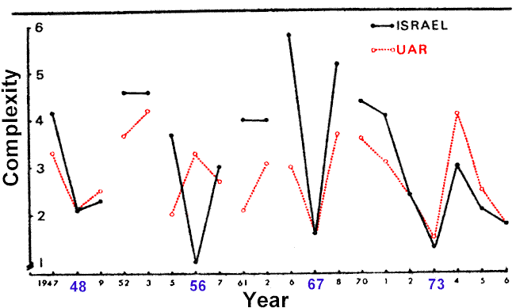

A while ago I compiled the Improve The Way You Play Diplomacy Web page. This page included a Dip Tip section of short, one sentence tidbits of advice. I began with a bunch of my own tips, and gradually added tips from others as they were submitted, until a substantial list of tips was formed. When I lost Internet access early this year, the page was taken over by Thad Black, and the Dip Tips section was lost. The page has since been integrated into The Pouch.
One of the Dip Tips said something to the effect of: "Complex logic is a sign of good will." (I believe this was one of my own tips, but if I'm mistaken, for heaven's sake, whoever submitted it should contact me and I'll give you your due credit.)
I've always felt somewhat insecure about giving advice. For each solo victory, I've suffered three eliminations, but most games end in a draw. By no means am I a Diplomacy master, and have no real right to be a guru. Nevertheless, I wanted to voice my opinions. The Dip Tip list granted me safety in numbers. I figured that however bad my advice is, if enough people submitted, someone was bound to give a tip that was worse than mine.
Earlier this year I discovered War, Peace, and Integrative Complexity. I was redeemed. Here was a study published in a reputable journal, supporting at least one of my dips tips scientifically. After reading the whole article, I was thrilled to discover how much of it was directly applicable to Diplomacy.
The first important thing about the study, is that it is not merely attempting to explain things after the fact, but rather it introduces a hypothesis which may be used to predict a conflict before it happens. This is of obvious relevance to Diplomacy players. "Speeches from war years used in the study were all made in the months previous to the outbreak of major hostilities. Thus, complexity scores of these speeches are predictive of imminent war rather than being responses to concurrent conflict." (pg. 434)
Secondly, it is important to make a distinction between conceptual
complexity, and integrative complexity. Conceptual complexity is a personality
variable, whereas integrative complexity concerns "aspects of information processing,
which may change as the situation changes." (pg. 431) What this means for
Diplomacy players, is that it is the change in complexity which indicates a possible
future aggression. Low complexity by itself, is not a valid predictor, because
different players have different levels of conceptual complexity. This is an
important distinction pointing out the flaw in my dip tip, because it considers only the
level of complexity, not the change. Someone who always communicates at a moderately
low level of complexity, may be less dangerous than someone who drops from a high level of
complexity, to a moderate level of complexity. It is the change of complexity that
is important, so you may find it useful to save old messages for later analysis and
comparison.
By now you are probably wondering, "What the hell is 'integrative
complexity'?" Seudfeld can
probably explain it best. "The current study was based on the scoring of archival
materials for integrative complexity. This variable is derived from the
conceptual complexity dimension of personality...Information processing at the lower end
of the scale tends to be rigid, all-or-nothing, routinized, and based upon only a small
segment of the total information available. At the high end, information-processing
is flexible, combinatorial, probabilistic, and information-orientated. The level of
conceptual complexity of a particular individual is a function of three
components..."
The graph below was photocopied from the article, and touched up with some color, in order to improve clarity. Red dots indicate the integrative complexity of United Arab Republic (combined data from Egypt and Syria), while black solid lines indicate the complexity of speeches made by Israeli representatives. Data was obtained by analysing various speeches made in the UN General Assembly and Security Council. Dates of major conflict are emphasized in Blue.

The change in complexity is quite noticeable, in the months prior to war. In every case, the outbreak of war was preceded by a marked drop in levels of integrative complexity. One notable exception occurred in 1956, involving a surprise attack by Israel and allies against unexpecting Arabs. "The strike against the Suez Canal zone was not preceded by the usual levels of mutual preparation for war, no decrease occurred in speeches made by delegates of the Arab countries. This would imply that a unilateral sharp decrease may presage the initiation of hostilities by that country." (pg. 438)
Interestingly, one will note from the graph, at the time the article was written, Arab and Israeli speeches were declining in complexity. With the advantage of hindsight, this provides an interesting test-case for the theory. "The low level of complexity characteristic of Israeli and Arab speeches during 1976 may indicate the escalation of the Lebanese civil war or may be a predictor of a major outbreak of hostilities in the near future." (pg. 427) Personally, I'm convinced, but judge for yourself:
"...In the summer of 1975 all-out civil war broke out between the Muslim coalition allied with Palestinian groups and the Christian-dominated militias. In April 1976, an uneasy cease-fire was forced upon the two sides when Syrian military forces intervened at the request of the Lebanese president, Suleiman Franjieh and with the approval of the Arab League of States. Nevertheless, sporadic violence continued, and in 1978 Israel invaded southern Lebanon in an attempt to eliminate Palestinian bases." - Arab Net
As I say, I'm convinced. The complexity peak in 1974, followed by a drop in complexity, most likely predicted the 1975 civil war since Israel, in the interest of crushing Palestinian terrorism, provided support to the Christian Lebanese. This was only the first step in an escalation of conflict, that would continue to escalate while complexity declined, eventually culminating in the 1978 invasion of Lebanon.
While this method successfully predicted an escalation in hostility, a more sophisticated analysis would be needed to predict the nature of this escalation. It seems that integrative complexity is an accurate indicator of an imminent conflict, but used alone, may be unable to precisely locate the countries in which the impending battle will take place. Keep this in mind while playing Diplomacy. Decreasing complexity is an indicator of increased hostility, but for greatest precision this technique should be combined with other techniques, and your own intuition.
Conclusions
Seudfeld, TetLock & Ramirez; "War, Peace, and Integrative Complexity", Journal of Conflict Resolution, Vol. 21 No. 3, September 1977, Sage Publications, (p. 427-442)
 |
Brahm Dorst (brahm@futurewest.ca) |
If you wish to e-mail feedback on this article to the author, feel free to use the "Dear DP..." mail interface.